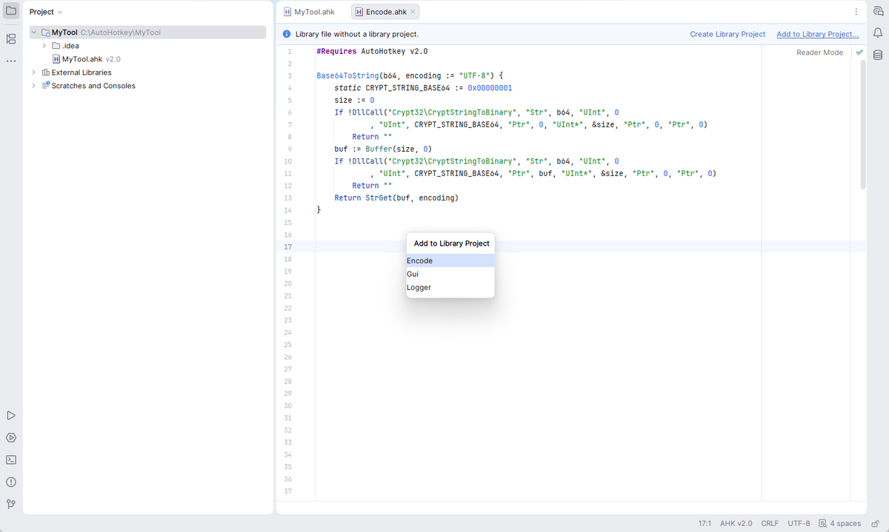
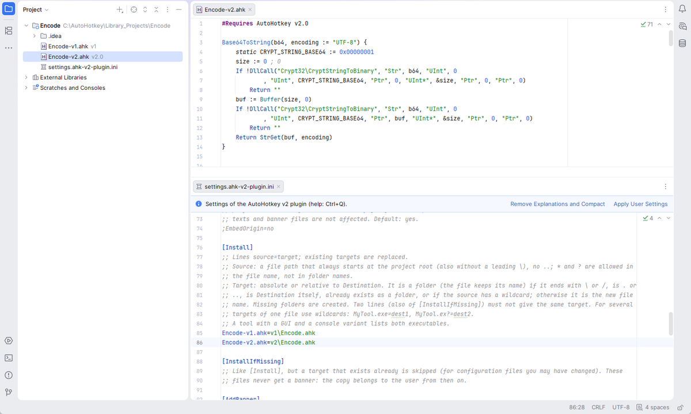
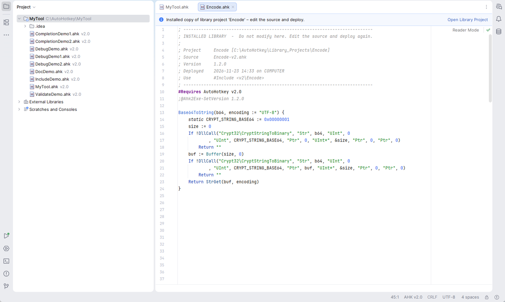

This page shows the big picture: why library projects exist, when they are worth it, and how to work with them in a few typical scenarios. The exact rules (settings, menu entries, the settings.ahk-v2-plugin.ini) are in Libraries.
Sooner or later, everyone who works with AutoHotkey for a while writes functions they need in every script: a logger, a few helpers for encoding, a small GUI class. They end up in the library folder (Documents\AutoHotkey\Lib), and every script gets them with #Include <Logger>.
That is convenient and works – until the library becomes important:
Logger.ahk, every script that includes it runs with the half-finished state the next time it starts.The idea of library projects: the library folder is only the shop window; the work is done in the workshop. Every library gets a small project of its own, with room for tests, notes and – if you like – Git. When it is ready, Deploy brings it into the library folder with one click, with a banner at the top that says where the file comes from and which version it is. The scripts that use the library banner nothing: #Include <Logger> stays as it is.
And when you are working on a script and want to change something in the library, Ctrl+click on #Include <Logger> leads to the copy, and from there one click leads back to the workshop – at the same place in the source.
Workshop (library projects folder) Shop window (library folder) Users
---------------------------------- ---------------------------- ----------------
Logger\ Lib\
Logger.ahk --- Deploy -------> Logger.ahk (read-only, MyTool.ahk
test\ with banner) #Include <Logger>
settings.ahk-v2-plugin.ini |
.git (optional) | Ctrl+click
^ v
+----- "Open Library Project" <--- notification bar
And Git? Recommended, because it is practical: the history replaces the commented-out code, and Set Version sets a tag if you like, so that you find every version number in the repository. But library projects are very useful without Git, too: a separate workshop, tests in the right place, the version number in the banner of every copy, and the way back from the copy to the project.
For many people the simple way is quite enough, and the plugin supports it fully:
#Include <Logger>) and completion of its names. That alone saves a lot of searching back and forth between script and library.v2\Gui).When to switch?
Switching costs no more than a folder for the library projects (one setting).
The examples are Logger.ahk (writes messages to a file) and Encode.ahk with a function Base64ToString that is needed for AutoHotkey v1 and v2.
Starting point: Lib\v2\Logger.ahk has existed for years and is used by five scripts.
Logger.ahk and click Create Library Project 'Logger' in the notification bar.<library projects folder>\Logger\ with a copy of the file (Logger-v2.ahk, because it comes from the version folder v2\) and a ready settings.ahk-v2-plugin.ini; the project opens in a window of its own.v2\, without adjusting any path.What you have gained: from now on you change the library in the workshop; the scripts see the change only after the next deploy. The file in the library folder is read-only in the editor and points back to the project – you can no longer work on the copy by mistake.
Logger.Logger.ahk is already there (with ;@SetVersion 0.1.0) and listed in the settings.ahk-v2-plugin.ini. Further files you add there yourself.test\try-logger.ahk.Lib\Logger.ahk is written with a banner (project, version, time).MyTool.ahk: #Include <Logger>; completion knows the functions.#Include <Logger> opens the copy (read-only), Open Library Project 'Logger' opens the project at the same place in the source.1.0.0, with commit and tag v1.0.0 if you like. The next deploy writes the version into the banner of the copy.The way back works even if file and project have different names: the plugin looks up which project deploys the file.
Nothing to set up: the new project is prepared so that steps 4, 5 and 9 work without any change – the folder test\ is never deployed and gets no version number, the banner comes automatically, and Set Version finds the file by itself.
What you have gained: every library file says which project and which version it comes from; with Git the log says what changed when.
Starting point: Encode.ahk is needed for old scripts as Lib\Encode.ahk and for v2 scripts as Lib\v2\Encode.ahk (#Include <Encode> and #Include <v2\Encode>).
Why two versions at all? Because sometimes there is no other way. Base64ToString decodes with the Windows API (Crypt32\CryptStringToBinary); that needs a buffer, and buffers are exactly where v1 and v2 differ fundamentally:
| Aspect | AutoHotkey v1 | AutoHotkey v2 |
|---|---|---|
| Create a buffer | VarSetCapacity(buf, size, 0) |
buf := Buffer(size, 0) |
Buffer for DllCall |
"Ptr", &buf |
"Ptr", buf |
| Output parameter | "UInt*", size |
"UInt*", &size |
| Read the string | StrGet(&buf, size, encoding) |
StrGet(buf, encoding) |
; v1
VarSetCapacity(buf, size, 0)
if !DllCall("Crypt32\CryptStringToBinary", "Str", b64, "UInt", 0
, "UInt", CRYPT_STRING_BASE64, "Ptr", &buf, "UInt*", size, "Ptr", 0, "Ptr", 0)
return ""
return StrGet(&buf, size, encoding)
; v2
buf := Buffer(size, 0)
if !DllCall("Crypt32\CryptStringToBinary", "Str", b64, "UInt", 0
, "UInt", CRYPT_STRING_BASE64, "Ptr", buf, "UInt*", &size, "Ptr", 0, "Ptr", 0)
return ""
return StrGet(buf, encoding)
Even for such a small helper there cannot be a common version. All the better if both are close together:
Encode contains Encode-v1.ahk and Encode-v2.ahk.settings.ahk-v2-plugin.ini deploys both under the same name into different folders:
[Install] Encode-v1.ahk=Encode.ahk Encode-v2.ahk=v2\Encode.ahk
Starting point: the project Encode already deploys Encode-v1.ahk to Lib\v1\Encode.ahk. The library folder still contains Lib\v2\Encode.ahk without a project.
Lib\v2\Encode.ahk, choose Add to Library Project... and select Encode.

Lib\v2\Encode.ahk, opened from MyTool.ahk with Ctrl+click: a library file without a project. Add to Library Project... offers the existing projects.v2\, so it becomes the source Encode-v2.ahk, and its line in the settings already has the right target:
[Install] Encode-v1.ahk=v1\Encode.ahk Encode-v2.ahk=v2\Encode.ahk

Encode right after adding: the new source Encode-v2.ahk and its line in [Install], ready to deploy.
If the project already has an Encode-v2.ahk, the file comes in as Encode_added.ahk with the target {set target}, and Deploy refuses it until you write the target – so that nothing is overwritten by mistake. After renaming it, Ctrl+Space behind = offers the target for its new name.Lib\v2\Encode.ahk shows its banner and leads back with Open Library Project.

Lib\v2\Encode.ahk after the next deploy, again opened from MyTool.ahk: read-only, with the banner of its project (no Commit line, the project has no Git) and the way back with Open Library Project.Good to know: Set Version always gives all files of a project the same version number. If two libraries are to be versioned independently, they belong in separate projects.
banner.txt in the library projects folder (for example with author and license) sets the banner of every copy in the projects with Banner=find:banner.txt, which finds it in the project folder or above, so you can also sort projects into subfolders. Put this line into your user settings, and every new project has it. Another banner.txt in the folder above, for example with the standard template (@standard), serves the tool projects there. A good start is the built-in template for libraries (Banner=@library), here with one more line:
---------------------------------------------------------------------------
INSTALLED LIBRARY - Do not modify here. Edit the source and deploy again.
Project {project-name} [{project-path}]
Source {source-relative}
Version {version}
Commit {commit}
Deployed {timestamp} on {computer}
Use {include}
License MIT
---------------------------------------------------------------------------
The copy Lib\Logger.ahk then starts, for example, with:
; --------------------------------------------------------------------------- ; INSTALLED LIBRARY - Do not modify here. Edit the source and deploy again. ; ; Project Logger [C:\AutoHotkey\Library_Projects\Logger] ; Source Logger.ahk ; Version 1.0.0 ; Commit 3f2a9c1 ; Deployed 2026-11-21 14:30 on MYCOMPUTER ; Use #Include <Logger> ; License MIT ; ---------------------------------------------------------------------------Lines without a value (no Git, no version) are simply left out.
gui\, text\ ...); every folder with a settings.ahk-v2-plugin.ini is a project. Nothing forces you to keep everything side by side.[Cleanup] at the next deploy – no orphaned file is left behind in the library folder.Plugin manual, Libraries, Library projects folder, Navigation